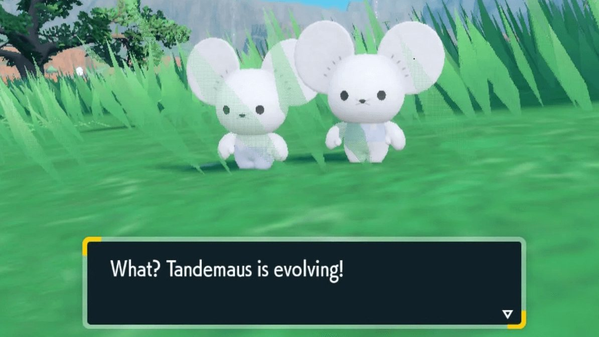
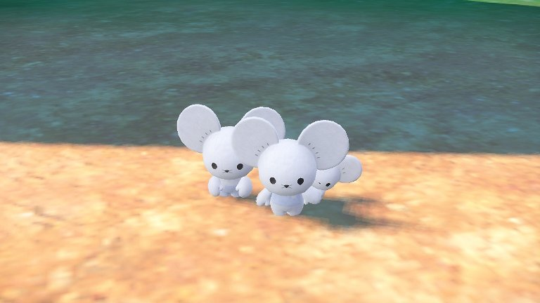

En los nuevos juegos de Pokémon hay distintos pokémon que evolucionan por nivel:.
Tandemaus
Esta pareja de ratones introducida en la 9ª generación evoluciona al alcanzar el nivel 25.

En los nuevos juegos de Pokémon hay distintos pokémon que evolucionan por nivel:.
Esta pareja de ratones introducida en la 9ª generación evoluciona al alcanzar el nivel 25.